Art and China after 1989
Artist Work
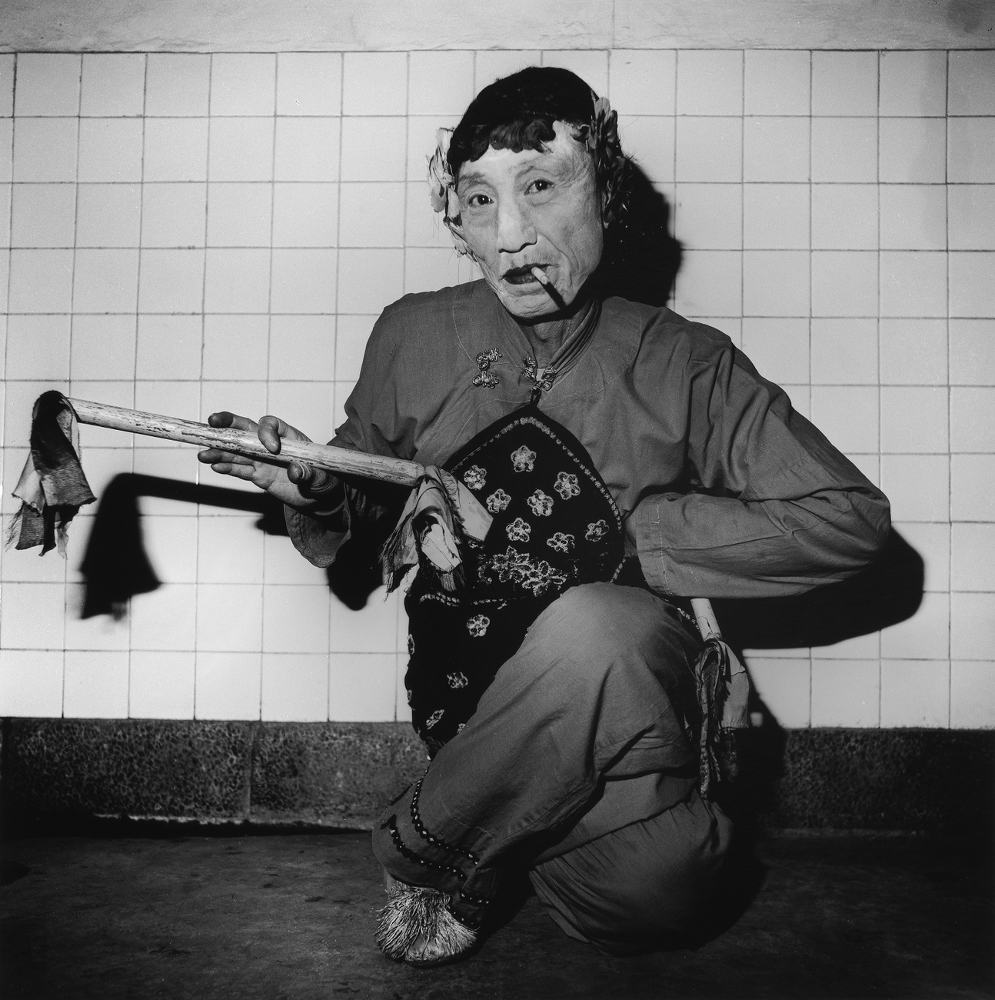
An Old Peking Opera Actor Playing a Female Role
— Liu Zheng
1995
Archival inkjet print
13 4/5 × 13 4/5 in; 35 × 35 cm
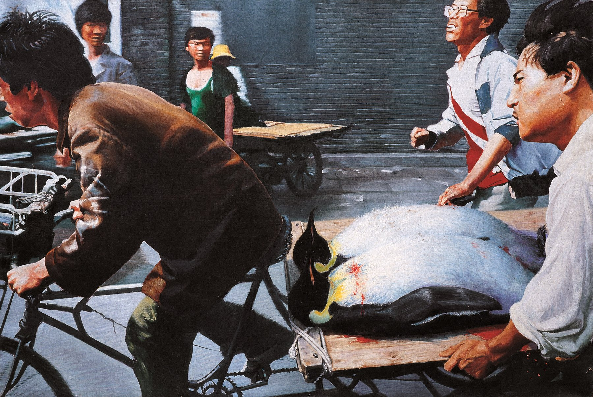
New Beijing
— Wang Xingwei
2001
Oil on canvas
78 7/10 × 118 1/10 in; 200 × 300 cm
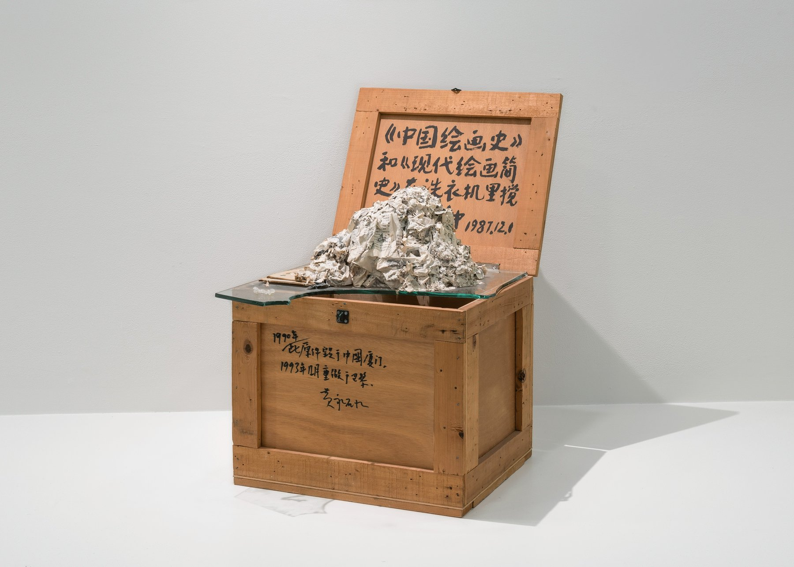
The History of Chinese Painting and A Concise History of Modern Painting Washed in a Washing Machine for Two Minutes
— Huang Yong Ping
1987
Ink on wooden crate, paper pulp, and glass
30 1/5 × 19 × 27 1/2 in; 76.8 × 48.3 × 69.9 cm
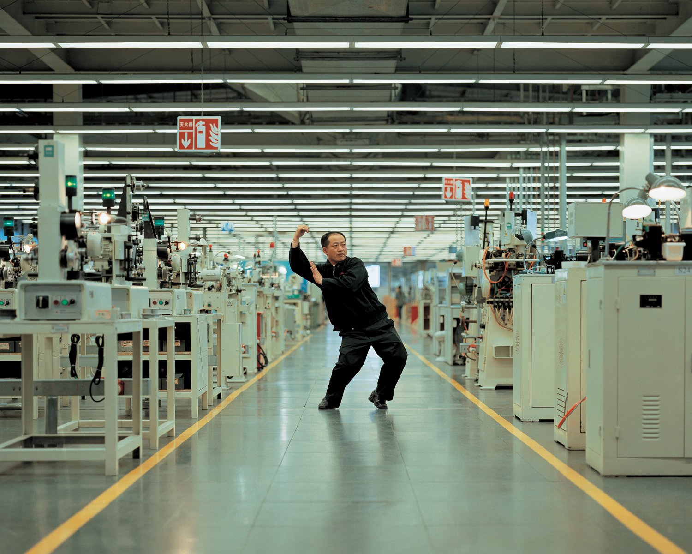
Whose Utopia?
— Cao Fei
2006
Chromogenic print
47 1/5 × 59 1/10 in; 120 × 150 cm
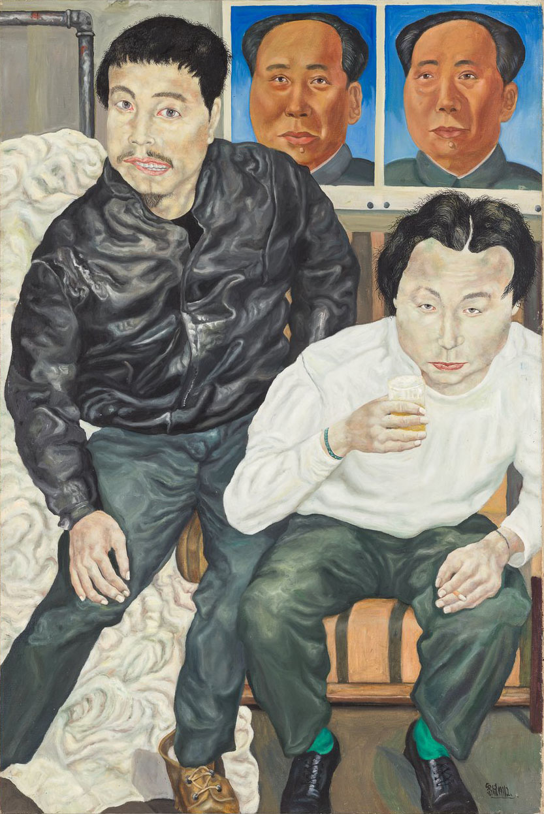
Two Drunk Painters
— Liu Wei
1990
Oil on canvas
59 x 39 1/2 in; 149.86 x 100.33 cm
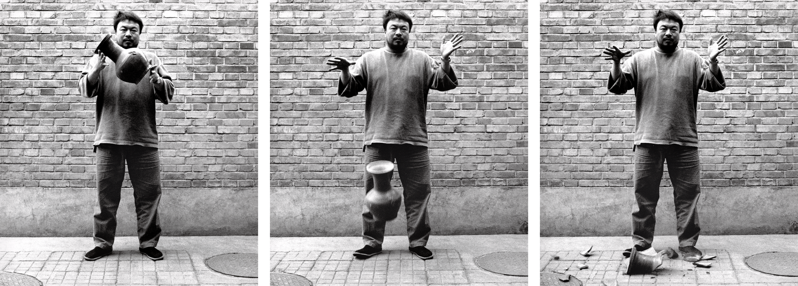
Dropping a Han Dynasty Urn
— Ai Weiwei
1995
Black and white prints
58 3/10 × 47 3/5 in; 148 × 121 cm
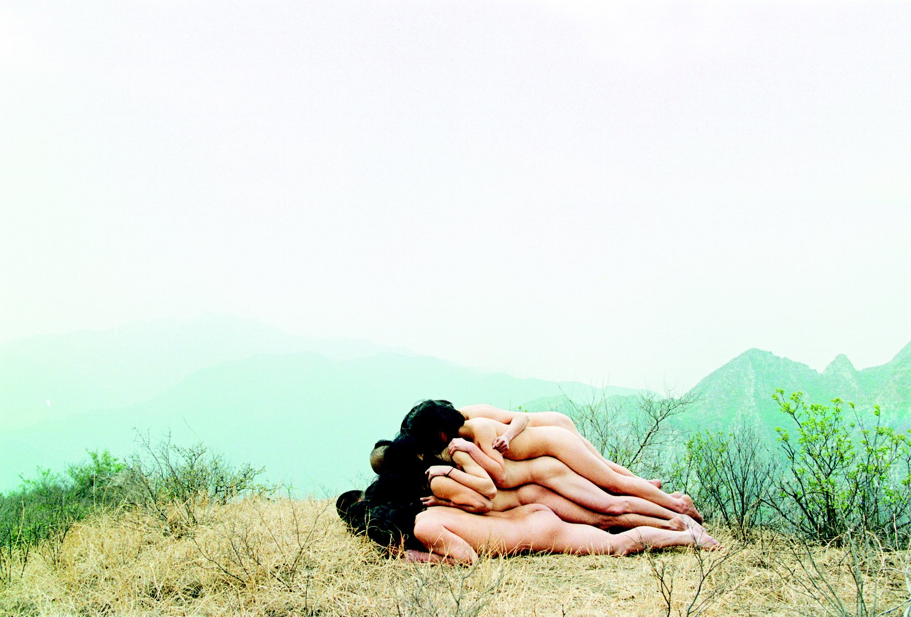
To Add One Metre To An Anonymous Mountain
— Zhang Huan
1995
Photograph
34 × 47 1/2 in; 86.4 × 120.7 cm
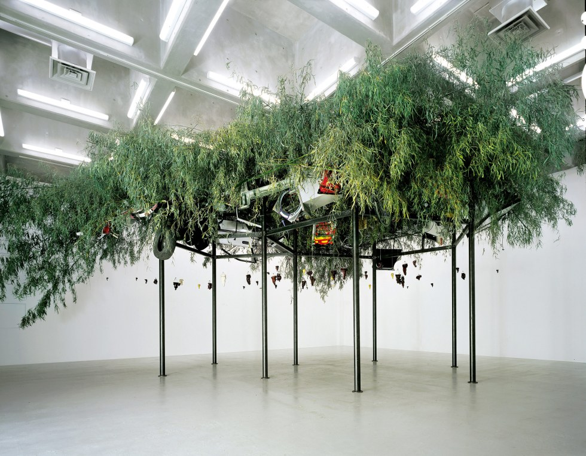
Fu Dao/Fu Dao (Upside-Down Buddha/Arrival at Good Fortune)
— Chen Zhen
1997
Steel, bamboo, resin Buddha statues, washing machine, computer monitor, tires, bicycle, fan, chair, household appliances, other found objects, and string
Approximately 500 × 800 × 650 cm
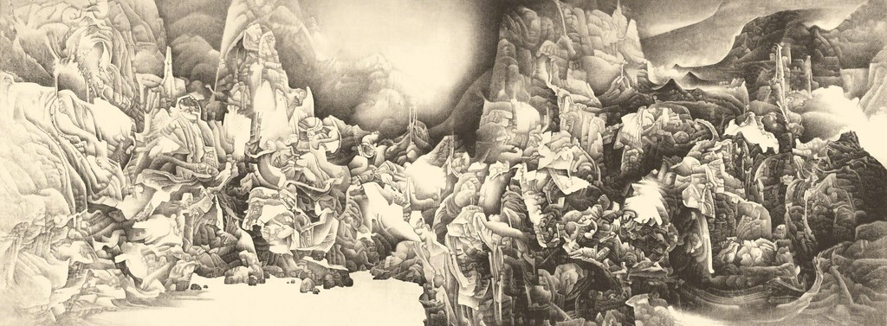
Splendor of Heaven and Earth
— Liu Dan
1994-95
Ink on paper
74 4/5 × 196 9/10 in; 190 × 500 cm
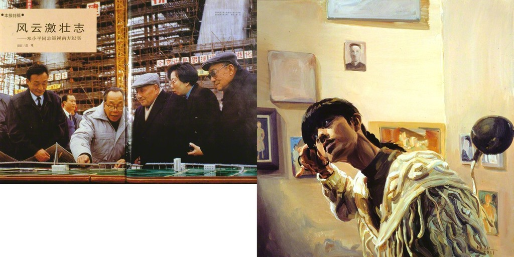
Deng Xiaoping’s Tour in the South of China, “China Pictorial,” p. 2, no. 6 & Twenty-Six Years Old, A Still of the Film “The Days”, from Witness to Growth
— Yu Hong
1992 & 2001
Two parts, left: inkjet print; right: acrylic on canvas
66 1/10 × 78 7/10 in; 168 × 200 cm
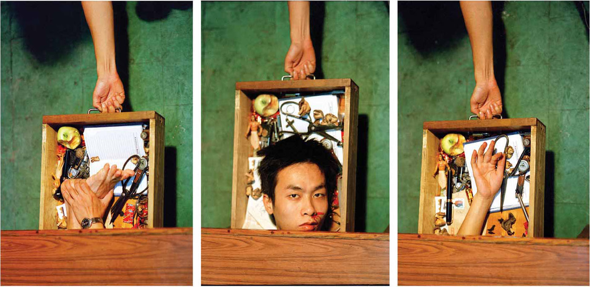
Object in Drawer
— Jiang Zhi
1997
Chromogenic print
177 1/5 in diameter; 450 cm diameter
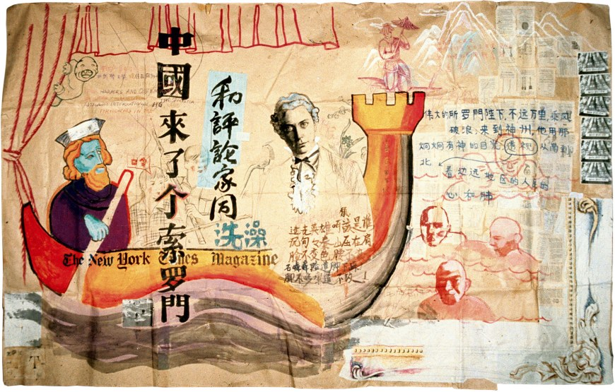
There Came a Mr. Solomon to China
— Zhou Tiehai
1994
Ink, graphite, watercolor, and paper collage
490 3/5 × 137 4/5 in; 230 × 350 cm
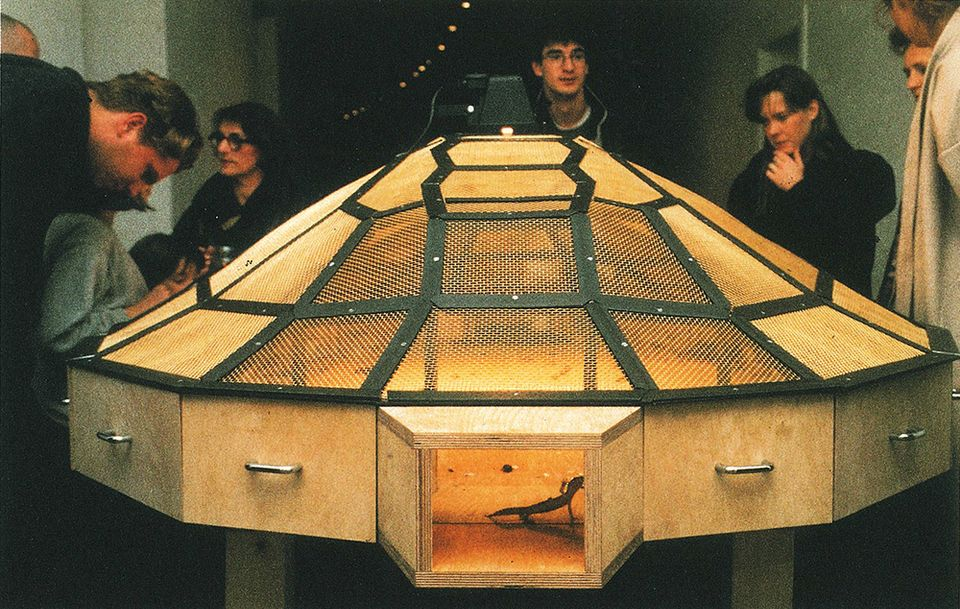
Theater of the World
— Huang Yong Ping
1993
Wood and metal structure with warming lamps, electric cable, insects (spiders, scorpions, crickets, cockroaches, black beetles, stick insects, centipedes), lizards, toads, and snakes
59 1/10 × 106 3/10 × 63 in; 150 × 270 × 160 cm
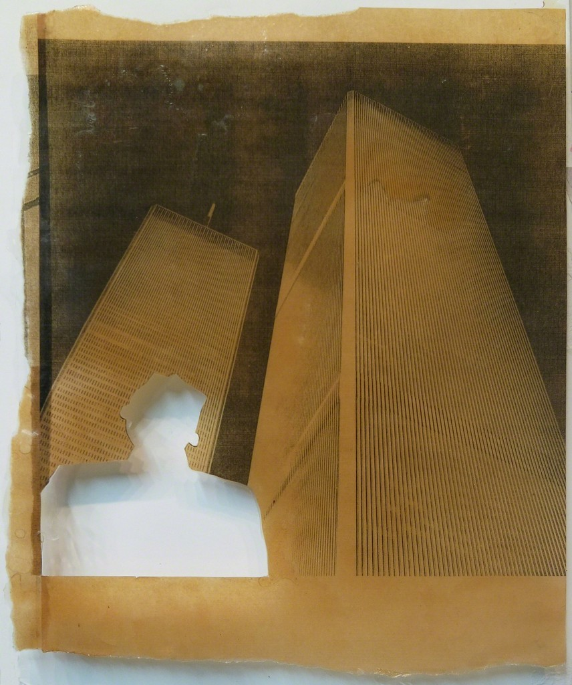
In Memory of Tseng Kwong Chi
— Zhang Hongtu
1991
Photocopy and epoxy resin
13 7/10 × 11 in; 34.9 × 28 cm
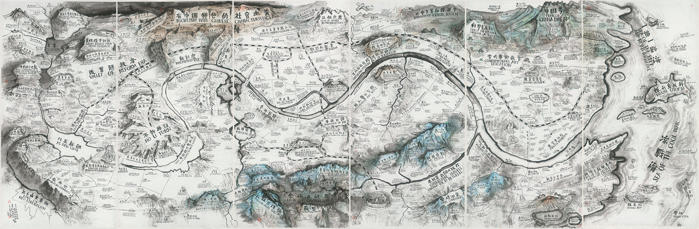
Map of "Art and China after 1989: Theater of the World"
— Qiu Zhijie
2017
Ink on paper, mounted to silk, six panels
94 1/2 in; 240 cm